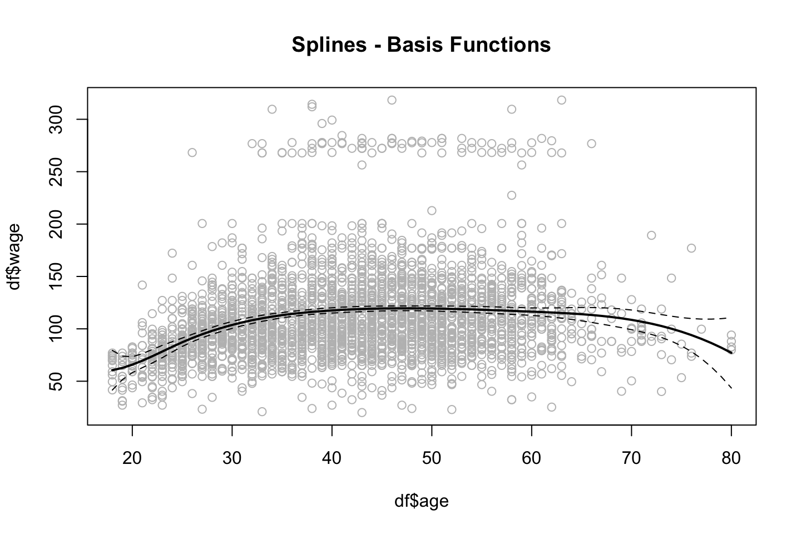

2.3 Lab section
Loading the data that will be used throughout the lab section.
library(ISLR)
attach(Wage)
df <- Wage
2.3.1 Polynomial Regression and Step Functions
2.3.1.1 Continous model
Fitting the model:
fit <- lm(wage ~ poly(age,4) #Orthogonal polynomials
,data = df)
fit2 <- lm(wage ~ poly(age,4,raw = TRUE) #Orthogonal polynomials
,data = df)Note: poly() returns orthogonal polynomials, which is some linear combination of the variables to the d power. See the following two examples when using orthogonal and normal polynomials:
{
print("Orthogonal")
cbind(df$age,poly(x = df$age,degree = 4))[1:5,] %>% print()
print("Regular")
cbind(df$age,poly(x = df$age,degree = 4,raw = TRUE))[1:5,] %>% print()
}## [1] "Orthogonal"
## 1 2 3 4
## [1,] 18 -0.0386247992 0.055908727 -0.0717405794 0.08672985
## [2,] 24 -0.0291326034 0.026298066 -0.0145499511 -0.00259928
## [3,] 45 0.0040900817 -0.014506548 -0.0001331835 0.01448009
## [4,] 43 0.0009260164 -0.014831404 0.0045136682 0.01265751
## [5,] 50 0.0120002448 -0.009815846 -0.0111366263 0.01021146
## [1] "Regular"
## 1 2 3 4
## [1,] 18 18 324 5832 104976
## [2,] 24 24 576 13824 331776
## [3,] 45 45 2025 91125 4100625
## [4,] 43 43 1849 79507 3418801
## [5,] 50 50 2500 125000 6250000In the end, it does not have a noticeable effect.
options(scipen = 5)
{
coef(summary(fit)) %>% print()
coef(summary(fit2)) %>% print()
}## Estimate Std. Error t value Pr(>|t|)
## (Intercept) 111.70361 0.7287409 153.283015 0.000000e+00
## poly(age, 4)1 447.06785 39.9147851 11.200558 1.484604e-28
## poly(age, 4)2 -478.31581 39.9147851 -11.983424 2.355831e-32
## poly(age, 4)3 125.52169 39.9147851 3.144742 1.678622e-03
## poly(age, 4)4 -77.91118 39.9147851 -1.951938 5.103865e-02
## Estimate Std. Error t value Pr(>|t|)
## (Intercept) -184.1541797743 60.04037718327 -3.067172 0.0021802539
## poly(age, 4, raw = TRUE)1 21.2455205321 5.88674824448 3.609042 0.0003123618
## poly(age, 4, raw = TRUE)2 -0.5638593126 0.20610825640 -2.735743 0.0062606446
## poly(age, 4, raw = TRUE)3 0.0068106877 0.00306593115 2.221409 0.0263977518
## poly(age, 4, raw = TRUE)4 -0.0000320383 0.00001641359 -1.951938 0.0510386498Even though the coefficients are different and the p-values hereof, the fitted values will be indistinguishable (Hastie et al. 2013, 288). This is also shown later.
Alternatives to using poly()??
We have two alternatives:
Using
I()Using
cbind()Using
I()
fit2a <- lm(wage ~ age + I(age^2) + I(age^3) + I(age^4) #Note that 'I()' is added
,data = df)
coef(fit2a)## (Intercept) age I(age^2) I(age^3) I(age^4)
## -184.1541797743 21.2455205321 -0.5638593126 0.0068106877 -0.0000320383Notice I() as ‘^’ has another special meaning in formulas
Hence we see that the coefficients are the same.
- Using
cbind()
fit2b <- lm(wage ~ cbind(age,age^2,age^3,age^4)
,data = df)
coef(fit2b)## (Intercept) cbind(age, age^2, age^3, age^4)age
## -184.1541797743 21.2455205321
## cbind(age, age^2, age^3, age^4) cbind(age, age^2, age^3, age^4)
## -0.5638593126 0.0068106877
## cbind(age, age^2, age^3, age^4)
## -0.0000320383We see that we are now able to use ‘^’ within the cbind().
proceeding with the lab sections. We can now present a grid of values for age, at which we want predictions and then call the predict() and also plot the standard errors.
agelims <- range(df$age) #The min and max
age.grid <- seq(from = agelims[1],to = agelims[2]) #Creating a counter within the range
preds <- predict(object = fit
,newdata = list(age = age.grid) #Creating a list with the counter named age, so it fits the IV naming
,se.fit = TRUE)
se.bands <- cbind(preds$fit + 2*preds$se.fit #Upper band
,preds$fit-2*preds$se.fit) #Lower bandNotice that 2 SE (2 sd) = 95%, hence we expect to contain 95% of the data within confidence levels.
Now we can plot the data
plot(x = df$age,y = df$wage
,xlim = agelims
,cex = 0.5 #Size of dots
,col = "darkgrey")
title("Degree-4 Polynomial",outer = TRUE)
lines(x = age.grid,y = preds$fit
,lwd = 2
,col = "blue")
Comparison between raw polynomials and orthogonal polynomials
With the following we see that the difference of the fitted values are practically 0.
preds2 <- predict(object = fit2
,newdata = list(age = age.grid)
,se.fit = TRUE)
max(abs(preds$fit-preds2$fit))## [1] 7.81597e-11In terms of predictions, the two approaches are more or less the same, although the orthogonal polynomials removes some effect of collinearity.
Assessing what polynomial to include
Now we can compare models with different orthogonal polynomials. Using ANOVA, which compare the RSS to see if the decrease in RSS is significant.
fit.1 <- lm(wage~age,data=df)
fit.2 <- lm(wage~poly(df$age,2),data=df)
fit.3 <- lm(wage~poly(df$age,3),data=df)
fit.4 <- lm(wage~poly(df$age,4),data=df)
fit.5 <- lm(wage~poly(df$age,5),data=df)
anova(fit.1,fit.2,fit.3,fit.4,fit.5)| Res.Df | RSS | Df | Sum of Sq | F | Pr(>F) |
|---|---|---|---|---|---|
| 2998 | 5022216 | NA | NA | NA | NA |
| 2997 | 4793430 | 1 | 228786.010 | 143.5931074 | 0.0000000 |
| 2996 | 4777674 | 1 | 15755.694 | 9.8887559 | 0.0016792 |
| 2995 | 4771604 | 1 | 6070.152 | 3.8098134 | 0.0510462 |
| 2994 | 4770322 | 1 | 1282.563 | 0.8049758 | 0.3696820 |
Note,
- the anova compares the sum of resduals squared.
- the anova follows an F distribution, hence we could apple the critical values
based on the anova we see that the errors change significantly until the 5th degree, hence the decision should be to take the model with order 4 of polynomials.
Notice, that the model will never become worse in sample when complexity is added, as we fit the model more to the data.
Alternative
We could also have obtained the same output using coef() instead of the anove, where we see that teh p-values are the same, also the squared value of t (\(t^2=F\)).
coef(summary(fit.5))## Estimate Std. Error t value Pr(>|t|)
## (Intercept) 111.70361 0.7287647 153.2780243 0.000000e+00
## poly(df$age, 5)1 447.06785 39.9160847 11.2001930 1.491111e-28
## poly(df$age, 5)2 -478.31581 39.9160847 -11.9830341 2.367734e-32
## poly(df$age, 5)3 125.52169 39.9160847 3.1446392 1.679213e-03
## poly(df$age, 5)4 -77.91118 39.9160847 -1.9518743 5.104623e-02
## poly(df$age, 5)5 -35.81289 39.9160847 -0.8972045 3.696820e-01Notice: this is only an alternative when we exclusively have polynomials in the model!
Using ANOVA to assess for best models
The following is another example of using ANOVA where different variables are used:
And recall, that we should never apply p-values of variables in a model, to decide which that should be included.
NOTE; this approach only works when the models are nested, meanin that the overall variables are the same, hence M2 could not have regian for instance, they all need to have the same overall variable
fit.1 = lm(wage~education +age ,data=df)
fit.2 = lm(wage~education +poly(age ,2) ,data=df)
fit.3 = lm(wage~education +poly(age ,3) ,data=df)
anova(fit.1,fit.2,fit.3)| Res.Df | RSS | Df | Sum of Sq | F | Pr(>F) |
|---|---|---|---|---|---|
| 2994 | 3867992 | NA | NA | NA | NA |
| 2993 | 3725395 | 1 | 142597.10 | 114.696898 | 0.0000000 |
| 2992 | 3719809 | 1 | 5586.66 | 4.493588 | 0.0341043 |
What are we looking for?
- What model lowers the RSS significantly.
Using CV
We could also have chosen the order of polynomials using cross validation.
library(boot)
set.seed(19)
cv.error = rep (0, 5)
for (i in 1:5)
{
fit.i=glm(wage~poly(age,i),data=Wage) # notice glm here in conjunction with cv.glm function
cv.error[i]=cv.glm(Wage, fit.i, K=10)$delta[1] #K fold CV
}
cv.error # the CV errors of the five polynomials models## [1] 1674.979 1600.176 1595.913 1594.003 1596.304Concl: A 5 order model is not justified as the it starts increasing. Also we see that the 4th order d, is the best, which corresponds with previous findings.
2.3.1.2 Logarithmic model
The procedure is per se the same, but now we are working with a probabilistic model instead of. Hence the outcome must be binary. Thus, it is decided to predict whether a persons wage is higher or lower than 250.
fit <- glm(I(wage > 250) ~ poly(age,4) #Note the use of I()
,data = df
,family = binomial)Note, that again I() is used, where the expression is evaluated on the fly, one could naturally also had made a vector of the classes.
Note, by default glm() will transform TRUE and FALSE to respectively 1 and 0.
Now we can make predictions, which are logits, these can be used for much, hence later we will transform them into probabilities.
preds = predict(fit
,newdata = list(age=age.grid)
,se.fit = TRUE)
# We could have added type = response to get probabilities
preds$fit[1:10]#First 10 logits## 1 2 3 4 5 6 7
## -18.438190 -16.395452 -14.560646 -12.919746 -11.459196 -10.165904 -9.027249
## 8 9 10
## -8.031077 -7.165700 -6.419899To make confidence intevals for Pr(Y = 1|X), i.e.
\[\begin{equation} Pr(Y=1|X)= \frac{exp(X\beta)}{1+exp(X\beta)} \tag{2.5} \end{equation}\]
Where \(X\beta\) can be explained by:
\[\begin{equation} log(\frac{Pr(Y=1|X)}{1-Pr(Y=1|X)})=X\beta \tag{2.6} \end{equation}\]
Hence we must first calculate \(X\beta\) to find Pr(Y=1|X).
#Making Prbabilities
pfit = exp(preds$fit)/(1+exp(preds$fit)) #See equation above
#X beta
se.bands.logit = cbind(preds$fit+2*preds$se.fit #Upper level
,preds$fit-2*preds$se.fit) #Lower level
#Pr(Y = 1|X)
se.bands = exp(se.bands.logit)/(1+exp(se.bands.logit))Remember that 2 SE = 95%, thus with the confidence levels we expect to contain 95% of the data.
Notice, that the posterior probabilities could also have been found by using predict(), see the following:
preds = predict (fit
,newdata = list(age = age.grid)
,type = "response" #Getting probabilities instead of logits
,se.fit = TRUE)NOTICE: for some reason this will lead to wrong confidence intervals (Hastie et al. 2013, 292), thus we prefer the regular approach, as shown before
Now we can make the right hand plot, so we can compare with continous result.
par(mfrow = c(1,2)
,mar = c(3,4.5,4.5,1.1) #Controls the margins
,oma = c(0,0,4,0)) #Controls the margins
#Copy from earlier to combine plots
fit <- lm(wage ~ poly(age,4) #Orthogonal polynomials
,data = df)
preds <- predict(object = fit
,newdata = list(age = age.grid)
,se.fit = TRUE)
plot(x = df$age,y = df$wage
,xlim = agelims
,cex = 0.5 #Size of dots
,col = "darkgrey")
title("Degree-4 Polynomial",outer = TRUE)
lines(x = age.grid,y = preds$fit
,lwd = 2
,col = "blue")
#The new plot
plot(x = age,y = I(wage >250)
,xlim = agelims
,type ="n"
,ylim = c(0,.2))
points(jitter(age)
,I((wage>250)/5)
,cex = .5
,pch = "|"
,col = "darkgrey")
lines(x = age.grid,y = pfit
,lwd = 2
,col= "blue")
matlines(x = age.grid
,y = se.bands
,lwd = 1
,col = "blue"
,lty = 3)
We see on the right hand panel that the all the observations that have a wage above 250 is in the top and all those below hare in the bottom of the visualization. Although at the tail, we aren’t able to conclude much, as confidence interval is really high, hence it can both be high and low earners.
jitter() is merely an approach to avoid observations to overlap each other.
2.3.1.3 Step function
To fit the step function we must do:
- Define the cuts,
cut()is able to automatically pick cutpoints. One could also usebreak()to define where the cuts should be. - Train the model. Notice, that
lm()will automatically create dummy variables for the ranges.
{table(cut(df$age,4)) %>% print()
fit <- lm(wage ~ cut(df$age,4)
,data = df)
coef(summary(fit)) %>% print()}##
## (17.9,33.5] (33.5,49] (49,64.5] (64.5,80.1]
## 750 1399 779 72
## Estimate Std. Error t value Pr(>|t|)
## (Intercept) 94.158392 1.476069 63.789970 0.000000e+00
## cut(df$age, 4)(33.5,49] 24.053491 1.829431 13.148074 1.982315e-38
## cut(df$age, 4)(49,64.5] 23.664559 2.067958 11.443444 1.040750e-29
## cut(df$age, 4)(64.5,80.1] 7.640592 4.987424 1.531972 1.256350e-01We see that the p value of the cuts are significant, not that we can use the p-values for much.
Notice, that the first range is the base level, thus it is also left out. We can then use the intercept as the average wage for all in the range of up to 33.5 years.
Hence for a 40 year old person, the model will say that he has an wage of 94 + 24 = 118
rm(list = ls())2.3.2 Splines
The different approaches to splines are presented in the following.
2.3.2.1 Basis Function Splines
library(ISLR)
df <- Wage
library(splines)
agelims <- range(df$age) #The min and max
age.grid <- seq(from = agelims[1],to = agelims[2]) #Creating a counter within the rangeThe splines library contain what we need. We introduce the following functions:
bs(): Basis functions for splines. Generates entire matrix of basis functions for splines with the specified set of knots.ns(): Natural splines.smooth.spline(): Used when fitting smoothing splines.loess(): When fitting local regression.
Note, that by default the splines will be choosen to be 3, this can also be found in the function documentation.
par(mfrow = c(1,1),oma = c(0,0,0,0))
fit.bs <- lm(wage ~ bs(age,knots = c(25,40,60)) #we just chose the knots randomly
,data = df)
pred.bs <- predict(fit.bs
,newdata = list(age = age.grid)
,se.fit = TRUE)
plot(df$age
,df$wage
,col = "gray")
lines(age.grid
,pred.bs$fit
,lwd = 2)
lines(age.grid
,pred.bs$fit+2*pred.bs$se
,lty = "dashed")
lines(age.grid
,pred.bs$fit-2*pred.bs$se
,lty = "dashed")
title("Splines - Basis Functions")
We see that the splines have been fitted to the data and notice that the tails have wider confidence intervals.
We can get the amount of degrees of freedom by calling the dim()function.
{
#Specifying the knots
dim(bs(age,knots = c(25,40,60))) %>% print()
#df can be specified instead of knots
dim(bs(age,df = 6)) %>% print()
}## [1] 3000 6
## [1] 3000 6We see that the two alternatives produce the same results.
Notice, that there are packages that will optimize the amount of knots.
We can assess where the bs() placed the knots, by calling the attr().
attr(bs(age,df=6),"knots")## 25% 50% 75%
## 33.75 42.00 51.00In this case, R chose the 25%, 50% and 75% quantiles.
2.3.2.2 Natural Splines
It similar to bs(), but it has an additional condition. I did not really get it.
The fitting procedure is the same, but now we just use ns() instead of bs().
fit.ns = lm(wage ~ ns(age
,df = 4 #Note, as with bs() we could have specified the knots instead of.
)
,data = df)
pred.ns = predict(fit.ns
,newdata = list(age=age.grid)
,se.fit = TRUE)
#Copy of old plot
plot(df$age
,df$wage
,col = "gray")
lines(age.grid
,pred.bs$fit
,lwd = 2)
lines(age.grid
,pred.bs$fit+2*pred.bs$se
,lty = "dashed")
lines(age.grid
,pred.bs$fit-2*pred.bs$se
,lty = "dashed")
#Adding natural splines
lines(age.grid
,pred.ns$fit
,col ="red"
,lwd =2)
title("Splines - Basis Functions + Natural Splines")
legend("topright",c("Basis","Natural"),lty = 1,col = c("Black","Red"),cex = 0.6)
2.3.2.3 Smooth Splines
As we discovered in the first part of the chapter, it sets a knot at each observation, and then we will penalize the function with a lamda (\(\lambda\)), to avoid overfitting.
The code show the procedure.
#Hardcoding degrees of freedom
fit.ss <- smooth.spline(x = df$age,y = df$wage
,df = 16) #Remember that we must impose constraints
#Choosing smoothing param with CV
fit.ss2 <- smooth.spline (df$age
,df$wage
,cv = TRUE) #we choose cv instead of fixed amount of df
fit.ss2$df## [1] 6.794596We get sparsity hence we have degrees of freedom of 6.8. That is due to the tuning parameter which was found by the cross validation proces. We can find the specific lambda value with the following:
fit.ss2$lambda## [1] 0.02792303plot(age,wage
,xlim = agelims
,cex = .5
,col = "darkgrey")
title("Smoothing Spline")
lines(fit.ss,col = "red",lwd = 2)
lines(fit.ss2,col = "blue",lwd =2)
legend("topright",legend = c("16 DF","6.8 DF")
,col = c("red","blue")
,lty = 1
,lwd = 2
,cex = .8)
As expected, we see that the more complex model (highest amount of df) is the more flexible model.
Note: tuning parameter = \(\lambda\), where the CV seeks to choose the parameter that leads to the lowest error and return the df that leads to this level.
2.3.2.4 Local Regression
Recall that local regression makes a linear regression for the observations that are close to the observation under evaluation (\(x_0\)).
Thus we have to specify the span, the larger the span the smoother the fit, as we will include more observations.
NB: locfit library can also be used for fitting local regress
plot(x = df$age,y = df$wage
,xlim = agelims
,cex = .5
,col = "darkgrey")
title ("Local Regression")
fit.lr <- loess(wage ~ age
,span = .2 #Degree of smoothing / neighborhood to be included
,data = df)
fit.lr2 <- loess(wage ~ age
,span = .5 #Degree of smoothing / neighborhood to be included
,data = df)
lines(x = age.grid,y = predict(object = fit.lr,newdata = data.frame(age=age.grid))
,col = "red"
,lwd = 2)
lines(x = age.grid,y = predict(object = fit.lr2,newdata = data.frame(age=age.grid))
,col =" blue"
,lwd = 2)
legend(x = "topright"
,legend = c("Span = 0.2","Span = 0.5")
,col=c("red","blue")
,lty = 1
,lwd = 2
,cex = .8)
From the plot we also see that the model with the largest span has the smoothest fit.
2.3.3 GAMs
We want to predict wage, where year, age and education (as categorical) as predictors.
2.3.3.1 With only natural splines
According to the Hastie et al. (2013), 294, this is just a bunch of linear functions, hence we can merely apply lm(), see the following.
gam.m1 <- lm(wage ~ ns(year,df = 4) + ns(age,df = 5) + education #NOTICE, that we just use lm()
,data = df)
summary(gam.m1)##
## Call:
## lm(formula = wage ~ ns(year, df = 4) + ns(age, df = 5) + education,
## data = df)
##
## Residuals:
## Min 1Q Median 3Q Max
## -120.513 -19.608 -3.583 14.112 214.535
##
## Coefficients:
## Estimate Std. Error t value Pr(>|t|)
## (Intercept) 46.949 4.704 9.980 < 2e-16 ***
## ns(year, df = 4)1 8.625 3.466 2.488 0.01289 *
## ns(year, df = 4)2 3.762 2.959 1.271 0.20369
## ns(year, df = 4)3 8.127 4.211 1.930 0.05375 .
## ns(year, df = 4)4 6.806 2.397 2.840 0.00455 **
## ns(age, df = 5)1 45.170 4.193 10.771 < 2e-16 ***
## ns(age, df = 5)2 38.450 5.076 7.575 4.78e-14 ***
## ns(age, df = 5)3 34.239 4.383 7.813 7.69e-15 ***
## ns(age, df = 5)4 48.678 10.572 4.605 4.31e-06 ***
## ns(age, df = 5)5 6.557 8.367 0.784 0.43328
## education2. HS Grad 10.983 2.430 4.520 6.43e-06 ***
## education3. Some College 23.473 2.562 9.163 < 2e-16 ***
## education4. College Grad 38.314 2.547 15.042 < 2e-16 ***
## education5. Advanced Degree 62.554 2.761 22.654 < 2e-16 ***
## ---
## Signif. codes: 0 '***' 0.001 '**' 0.01 '*' 0.05 '.' 0.1 ' ' 1
##
## Residual standard error: 35.16 on 2986 degrees of freedom
## Multiple R-squared: 0.293, Adjusted R-squared: 0.2899
## F-statistic: 95.2 on 13 and 2986 DF, p-value: < 2.2e-16From the summary we see the variables that have been created and also the factor levels for education.
Again, we don’t have to interprete the coefficients, we just need to look at the shape.
2.3.3.2 With different splines
Now we have to apply the package gam.
This is the best approach.
library(gam)We can also construct a GAM model, that contains smoothing splines, that is done by calling s(). Where year and age will be included with up to 4 and 5 degrees of freedom.
gam.m3 <- gam(wage ~ s(year,df = 4) + s(age,df = 5) + education
,data = df)Remember, that GAM fits each variable while holding all other variables fixed. The actual fitting procedure is called backfitting, and fits variables by repeatedly updating the fit for each predictor (Hastie et al. 2013, 284–85). Hence, we create plots to interprete how.
par(mfrow = c(1,3))
plot(gam.m3 #Note, automatically identifies the GAM object, hence plots for each variable
,se = TRUE
,col ="blue")(#fig:GAMPlotLab7.8.3)GAM plot and intepretation
Interpreting the plot: Recall that the plots assumes that we hold the other variables fixed, hence we see the following:
- Left: We see that holding education and age fixed, the wage tends to increase over the years, that is quite natural, e.g., because of inflation.
- Center: Holding year and education fixed, we see that the wage tends to be highest in the middle region around 40-45 years of age. That is also quite intuitive that the wage first increase and then decreasing as the person gets closer to the retirement age.
- Right: Holding year and age fixed, we see that the higher education you have, the higher will your wage be.
par(mfrow = c(1,3))
plot.Gam(gam.m1
,se = TRUE
,col = "red")Figure 2.3: GAM of natural splines
Notice, that this plot looks very similar to @(fig:GAMPlotLab7.8.3).
This command could naturally also be used for the other GAM object, it is just that plot() does not automatically identify, that it is in fact intended to be interpretet as a GAM.
2.3.3.3 But what variables to include?
It looks as is year is rather linear. To make this assessment, we can apply an ANOVA test of the different combinations. Hence:
Note, the first model is nested in the second model (has the same variables), hence we can use ANOVA
#Excluding year
gam.m1 <- gam(wage ~ s(age,df = 5) + education
,data = df)
#Including year, but as a linear
gam.m2 <- gam(wage ~ year + s(age,df = 5) + education
,data = df)
anova(gam.m1,gam.m2,gam.m3,test = "F")| Resid. Df | Resid. Dev | Df | Deviance | F | Pr(>F) |
|---|---|---|---|---|---|
| 2990 | 3711731 | NA | NA | NA | NA |
| 2989 | 3693842 | 1.000000 | 17889.243 | 14.477130 | 0.0001447 |
| 2986 | 3689770 | 2.999989 | 4071.134 | 1.098212 | 0.3485661 |
We see that performance is significantly better going from model 1 to model 2, but on a five percent level, we are able to say, that we don’t gain anything with the third model, which is most complex model.
Thus, the linear constellation of year, with polynomials on age + education as factors, appear to be the best performing model.
With this in mind, it is interesting to assess the summary of the complex model:
summary(gam.m3)##
## Call: gam(formula = wage ~ s(year, df = 4) + s(age, df = 5) + education,
## data = df)
## Deviance Residuals:
## Min 1Q Median 3Q Max
## -119.43 -19.70 -3.33 14.17 213.48
##
## (Dispersion Parameter for gaussian family taken to be 1235.69)
##
## Null Deviance: 5222086 on 2999 degrees of freedom
## Residual Deviance: 3689770 on 2986 degrees of freedom
## AIC: 29887.75
##
## Number of Local Scoring Iterations: NA
##
## Anova for Parametric Effects
## Df Sum Sq Mean Sq F value Pr(>F)
## s(year, df = 4) 1 27162 27162 21.981 0.000002877 ***
## s(age, df = 5) 1 195338 195338 158.081 < 2.2e-16 ***
## education 4 1069726 267432 216.423 < 2.2e-16 ***
## Residuals 2986 3689770 1236
## ---
## Signif. codes: 0 '***' 0.001 '**' 0.01 '*' 0.05 '.' 0.1 ' ' 1
##
## Anova for Nonparametric Effects
## Npar Df Npar F Pr(F)
## (Intercept)
## s(year, df = 4) 3 1.086 0.3537
## s(age, df = 5) 4 32.380 <2e-16 ***
## education
## ---
## Signif. codes: 0 '***' 0.001 '**' 0.01 '*' 0.05 '.' 0.1 ' ' 1Looking at the section: “Anova for Nonparametric Effects,” we see that the smoothing spline on year, is not significant, hence it supports the conclusion from above, that we are better off, including the year as a linear variable.
Now we can make predictions.
#Predictions with linear year, non linear age and factors of education
preds <-predict(gam.m2
,newdata = df)2.3.3.4 GAM with local regression
We are also able to make GAM on other building blocks, for instance local regression, that will be shown in the following
For some reason the following cant be run.
#GAM with local regression
gam.lo <- gam(wage ~ s(df$year,df = 4) + lo(df$age,span = 0.7) + education
,data = df)
# plot.Gam(gam.lo #For some reason it cant be plotted
# ,se = TRUE
# ,col = "green")Making interactions in the local regression:
gam.lo.i <- gam(wage ~ lo(year,age,span = 0.5) + education
,data = df)
library(akima)
plot(gam.lo.i)

2.3.3.5 Logistic Regression
Plotting logistic regression GAM, here we can apply I() as previous used, to make the expression on the fly.
gam.lr <- gam(I(wage > 250) ~ year + s(age,df = 5) + education
,family = binomial
,data = df)
par(mfrow =c(1,3))
plot(gam.lr,se=T,col =" green ")
One could interprete the plot and assess each window to see how the variable influence the decision wether the observation is above or below. Remember that the outcome can be seen as probabilities, these can also be plotted to be shown the spread:
par(mfrow = c(1,1))
plot(gam.lr$fitted.values)
From th plot, we see that there is a tendency that the lower the education the lower the wage, the following table show how the high earners are distributed.
table(education,I(wage > 250))##
## education FALSE TRUE
## 1. < HS Grad 268 0
## 2. HS Grad 966 5
## 3. Some College 643 7
## 4. College Grad 663 22
## 5. Advanced Degree 381 45We see that there are no people with less than high school degree that earns more than 250.
To get more sensible result, we can remove the observations with a low degree, this will also show a more sensible result for the other degrees, see the following.
gam.lr.s = gam(I(wage > 250) ~ year + s(age,df = 5) + education
,family = binomial
,data = df
,subset = (education != "1. < HS Grad")) #removing people in the lowest group of education.
par(mfrow = c(1,3))
plot(gam.lr.s
,se = TRUE #Standard errors
,col =" green ")Do we need a nonlinear term for year? Use anova for comparing the previous model with a model that includes a smooth spline of year with df=4
We can do an ANOVA, but please notice, we use Chi Square now.
gam.y.s = gam(I(wage>250) ~ s(year, 4) + s(age,5) + education,family=binomial,data = df,subset=(education!="1. < HS Grad"))
anova(gam.lr.s,gam.y.s, test="Chisq") # Chi-square test as Dep variable is categorical| Resid. Df | Resid. Dev | Df | Deviance | Pr(>Chi) |
|---|---|---|---|---|
| 2722 | 602.4588 | NA | NA | NA |
| 2719 | 601.5718 | 2.999982 | 0.8869514 | 0.8285731 |
We do not need a non-linear term for year.